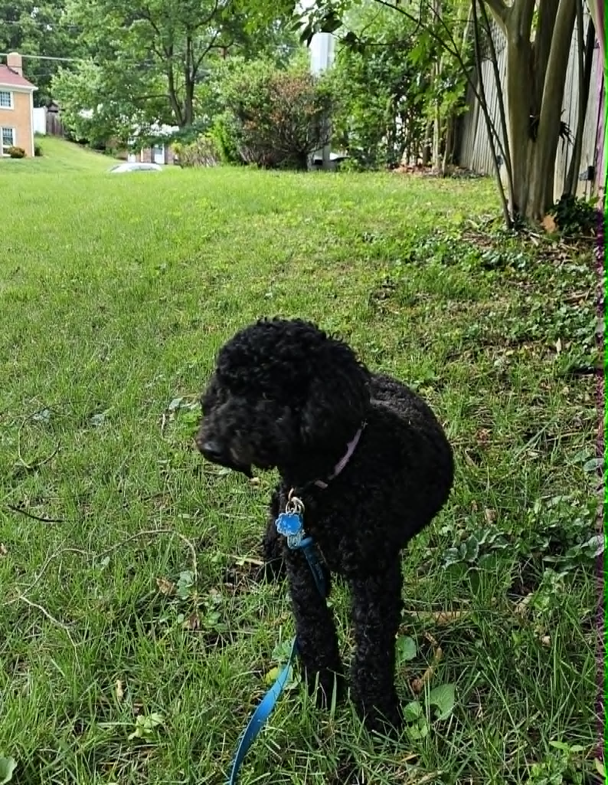

Hi, I'm Vero — and Dogs Are My Whole Heart Hola, soy Vero — y los Perros Son Todo Mi Corazón
I started Vero's Pet Care because I know exactly how it feels to leave your dog with someone you're not sure about. I've been there — watching the door, wondering if they're okay, counting the hours until you're home. I wanted to be the person that made that feeling go away completely. Comencé Vero's Pet Care porque sé exactamente cómo se siente dejar a tu perro con alguien de quien no estás seguro. He estado ahí — mirando la puerta, preguntándome si están bien, contando las horas. Quería ser la persona que hiciera desaparecer esa sensación por completo.
Why I Do This Por Qué Hago Esto
I've loved dogs for as long as I can remember. Growing up, our home was always full of them — big ones, small ones, old ones, terrified rescues who slowly came to trust again. I learned early that dogs don't just need food and water. They need consistency, patience, and someone who pays attention to who they actually are. He amado a los perros por todo el tiempo que puedo recordar. Al crecer, nuestra casa siempre estaba llena de ellos — grandes, pequeños, viejos, rescates aterrorizados que poco a poco volvían a confiar. Aprendí temprano que los perros no solo necesitan comida y agua. Necesitan consistencia, paciencia y a alguien que preste atención a quiénes son realmente.
When I moved to Fairfax, I started helping neighbors with their dogs — walking them, sitting with them, giving them baths in my backyard. Word spread, because the dogs came home happy and the photos I sent were real moments, not posed shots for show. That informal network became Vero's Pet Care. Cuando me mudé a Fairfax, comencé a ayudar a los vecinos con sus perros — pasearlos, cuidarlos, bañarlos en mi patio. La voz se corrió, porque los perros llegaban a casa felices y las fotos que enviaba eran momentos reales, no poses para mostrar. Esa red informal se convirtió en Vero's Pet Care.
What makes me different from a pet sitting app or a big company? I'm not a stranger who shows up with a leash. I'm Vero — the person who remembers that Max gets scared of thunderstorms and needs an extra cuddle, that Luna won't eat if her bowl isn't in exactly the right spot, and that Rocky's favorite walk route is along the creek trail on Oak Street. I know your dog. I care about your dog. And I'm always just a text away. ¿Qué me diferencia de una app o una empresa grande? No soy una desconocida que aparece con una correa. Soy Vero — la persona que recuerda que Max se asusta con los truenos y necesita un abrazo extra, que Luna no come si su tazón no está en el lugar exacto, y que el paseo favorito de Rocky es por el sendero del arroyo. Conozco a tu perro. Me importa tu perro. Y siempre estoy a un mensaje de distancia.
Three Principles I Never Compromise OnTres Principios que Nunca Comprometo
Safety First, AlwaysLa Seguridad Primero, Siempre
Every dog in my care is treated as if they were my own. I know emergency vet locations, keep detailed notes on each dog's needs, and maintain [REPLACE: insurance/certification details] so you're always protected.Cada perro a mi cuidado se trata como si fuera mío. Conozco las clínicas de emergencia, mantengo notas detalladas sobre las necesidades de cada perro y tengo seguro para que siempre estés protegido.
Personalized, Not GenericPersonalizado, No Genérico
No two dogs are the same, and no two visits are the same. I adapt to your dog's personality, preferences, and quirks — not the other way around. Your dog's routine is my routine.No hay dos perros iguales, y no hay dos visitas iguales. Me adapto a la personalidad, preferencias y peculiaridades de tu perro — no al revés. La rutina de tu perro es mi rutina.
Radical TransparencyTransparencia Radical
You always know what's happening. Photo updates every visit, immediate notification of anything unusual, and honest communication about what your dog needs. No surprises, ever.Siempre sabes lo que está pasando. Actualizaciones fotográficas en cada visita, notificación inmediata de cualquier novedad y comunicación honesta sobre lo que tu perro necesita. Sin sorpresas, nunca.